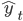

COMP3225 - Natural Language Processing
Natural Language Processing: study of interactions between computers and human language, in particular how to program computers to process and analyse large amounts of natural language data
|
Sentence |
Unit of written language |
|
Utterance |
Unit of spoken language |
|
Word Form |
Inflected form as it appears in the corpus e.g. said |
|
Lemma |
Abstract root form of the word e.g. say |
|
Function Word |
Indicating a grammatical relationship e.g. by |
|
Types |
Number of distinct words in a corpus |
|
Tokens |
Total number of words |
Corpus: collection of written texts having a specific author, language, time, place, and function
Token: symbol which determines how grammar and semantics can be understood
Morpheme: unit of language that cannot be divided further
Regular Expressions
Operators
|
Operator |
Meaning |
Example |
|
\ |
separator |
/woodchuck/ |
|
[ ] |
disjunction |
/[abc]/ |
|
( ) |
precedence |
/dogg(y|ies)/ |
|
{ } |
repetition |
/abc{3}/ or /abc{1,3}/ |
|
? |
optional |
/colou?r/ |
|
^ |
negation |
/^a/ |
|
. |
wildcard |
/.txt/ |
|
| |
disjunction |
/cat|dog/ |
|
* |
zero or many |
/[0-9]*/ |
|
+ |
one or many |
/[0-9]+/ |
|
*? |
non-greedy zero or many |
/[0-9]*?/ |
|
+? |
non-greedy one or many |
/[0-9]+?/ |
|
\( \) \1 |
capture group |
/I have a \(\w+\), do you want a \1?/ |
Lookahead Assertions
|
Operator |
Meaning |
Example |
|
?: ?= ?<= ?! ?<! |
non capturing group look ahead look behind negative look ahead negative look behind |
(?:word) (?=word) (?<=word) (?!word) (?<!word) |
Anchors
|
Expression |
Meaning |
|
^ |
start of line |
|
$ |
end of line |
|
\b |
word boundary |
|
\B |
non-word boundary |
Aliases
|
Expression |
Meaning |
Expansion |
|
\d |
number |
[0-9] |
|
\w |
alphanumeric or underscore |
[a-z A-Z 0-9_] |
|
\s |
whitespace |
[␣\r\t\n\f] |
Text Normalisation
Normalisation: words or tokens are put into standard format. For example, uh-huh becomes uh huh
Case Folding: all characters are mapped to lowercase
Lemmatisation: reducing words to their root. For example, saying becomes say
Sentence Segmentation: separation of text into sentences using punctuation, markers, and symbols
UNIX Commands
|
Command |
Meaning |
Example |
|
tr |
tokenise |
tr -sc 'A-Za-z' '\n' adds a new line after each character sequence |
|
sort |
sort alphabetically |
tr -sc 'A-Za-z' '\n' | sort |
|
uniq |
list unique elements |
tr -sc 'A-Za-z' '\n' | sort | uniq |
Patterns
|
Expression |
Meaning |
|
([A-Z]\.)+ |
abbreviations |
|
\w+(-\w+)* |
hyphenated words |
|
\£?\d+(\.\d+)? |
currency |
|
\.\.\. |
ellipsis |
BPE (Byte Pair Encoding): form of data compression where the most common pair of consecutive bytes is replaced with a new byte
Minimum Edit Distance
Minimum edit distance measures the similarity between strings, defined as the minimum number of editing operations, such as insertion, deletion, and substitution, needed to transform one string into another.
The Levenshtein distance between two sequences is the simplest weighting factor in which each operation has a cost of 1.
D(i,j) = min
Evaluation
Evaluation Techniques
Extrinsic Evaluation: evaluates the performance of an NLP component by embedding it in an application and measuring its performance
Intrinsic Evaluation: measures the quality of an NLP component independently of its application
Steps in training and evaluation:
The corpora size affects the quality of training on a model.
K-Fold Cross-Validation: statistical procedure used to evaluate the skill of a model on limited data
Random subsampling: evaluation technique similar to cross-validation, which selects subsets of data as the test set randomly rather than using K fixed-size groups. This improves randomisation, but may not be representative of all data
Evaluation Metrics
TP (True Positive): "yes" data is correctly predicted as "yes"
TN (True Negative): "no" data is correctly predicted as "no"
FP (False Positive): "no" data is incorrectly predicted as "yes"
FN (False Negative): "yes" data in incorrectly predicted as "no"
Accuracy =
proportion of correct predictions
Precision =
proportion of correct positive predictions out of all positive predictions
i.e. how many positive predictions were correct?
Recall =
proportion of correct positive predictions out of all correct predictions
i.e. how many correct predictions were made?
F1 = harmonic mean of precision and recall
ROUGE: recall-based metric used to evaluate text summarisation
BLEU: precision-based metric used to evaluate text translations
BLEU = BP
BP = min(1, exp(1 - LF/LS))
PERPLEXITY: statistical metric used to evaluate language models
N-grams
Probabilities are useful for identifying words where the input is noisy, ambiguous, or broken up.
N-Gram: contiguous sequence of n items. The n-gram model calculates the probability of the next word in some text, given the previous n-1 words
N-gram Probabilities
Assume P(w|h) is the probability of word w given the history h. Suppose the history is "its water is so transparent that", w is "the", and C means count:
Assume P(w1:n) is the probability of a sequence w1, …, wn. We can use joint probability to predict this value:
P(w1) = P(w1)
P(w1,w2) = P(w1|w2) * P(w1)
P(w1,w2,w3) = P(w3|w1,w2) * P(w1,w2)
P(w1,w2,w3,w4) = P(w4|w1,w2,w3) * P(w1,w2,w3)
=> P(w1, …, wn) = P(wn|w1, …, wn-1) * P(w1, …, wn-1)
Applying the chain rule of probability:
Assume P(wn|wn-1) is the probability of a bigram, i.e. the probability of a word wn given all previous words by using only the probability of the previous word.
A Markov model is a probabilistic model which assumes it can predict the probability of some future event from its current state.
P(wn|wn-1) ≈ P(wn-N+1 : n-1|wn-1)
Given the bigram assumption for the probability of an individual word, we can calculate the probability of a sequence of words w1:n using substitution:
MLE (Maximum Likelihood Estimation): selection of the most suitable set of bigram parameters to maximise the performance of a model in predicting the nth word in some text
To calculate the bigram probability of a word y given the previous word x, we can calculate the count of the bigram C(xy) and normalise by the sum of all bigrams starting with x:
We can simplify this equation by simplifying the denominator to the unigram count for wn-1:
For the general case of MLE n-gram parameter estimation:
Large n-gram probabilities must be stored as log probabilities to avoid numerical underflow. Adding in log space is equivalent to multiplying in linear space, so log probabilities are combined by addition. The original values can be restored by taking the exponential:
Limitations
Unknown Words
Zero Probabilities
Sparse Data
Smoothing
Smoothing prevents language models from assigning a probability of zero to unseen n-grams, by taking some probability from frequent n-grams and giving it to unseen n-grams.
In Laplace smoothing, one is added to all bigram counts before they are converted to probabilities, removing any zero values. The MLE for a unigram of word wi is its count ci normalised by the total number of tokens N.
Laplace smoothing adds one to each word count and normalises by the vocabulary size V.
It is more convenient to use the adjusted count c* to allow easier comparison with other MLE values.
The level of smoothing is defined by the relative discount dc, the ratio of adjusted counts to original counts.
For bigrams, the unigram count must be augmented by the vocabulary size V.
In add-k smoothing, a fractional amount k is added to all bigram counts before they are converted to probabilities.
Interpolation combines several n-gram estimators to give a weighted value. In linear interpolation, n-grams are combined by applying a weight λ where the sum of weights is 1.
Backoff estimates the probability of an n-gram which has no appearances by using a subset of the n-gram. For example, a trigram wn-2wn-1wn is replaced with the bigram wn-1wn or the unigram wn. If an n-gram has zero occurrences, the algorithm backs off to the (n-1)-gram until an occurrence is found.
Katz Backoff uses a parameter α to distribute the probability mass correctly.
BO = backoff, N = n-gram length
Kneser-Ney smoothing is a commonly used n-gram smoothing method. It subtracts an absolute discount d from each count, which helps to scale lower-order n-grams.
bigram λ * unigram
Kneser-Ney smoothing uses the continuation probability which estimates how frequently a word w appears as a unique continuation of an n-gram. It is calculated by the frequency of the n-gram containing w over the frequency of all n-grams with matching n. For example, "Great Britain" has a low continuation value because it only appears in a single context.
Stupid Backoff is a simpler solution used for large-scale text corpora, which is inexpensive to train on large datasets and approaches the accuracy of Kneser-Ney smoothing as the size of the training set increases. Stupid Backoff does not discount higher-order probabilities. If a higher-order n-gram has no occurrences, the algorithm backs off to a lower-order n-gram weighted by a fixed weight S.
Parts of Speech
POS Tagging
A part of speech is a category to which a word is assigned in accordance with its syntactic functions. In English the main parts of speech are noun, pronoun, adjective, determiner, verb, adverb, preposition, conjunction, and interjection.
Parts of speech fall into two categories. Closed classes have a fixed membership where specific words belong. These are typically function words such as of, it, and, you. Open classes such as nouns and verbs are flexible and are continually growing to accommodate new words.
POS Tag: label assigned to tokens in a text corpus to indicate the part of speech and often other grammatical categories such as tense, number, and case
POS tagging: process of assigning a part of speech to each word in text. An input sequence x1, …, xn of tokenised words is converted into an output sequence y1, …, yn of tags. Tagging is a disambiguation task because words are ambiguous and may have various possible tags. POS tagging resolves ambiguities and selects the correct POS tag for each word.
Hidden Markov Models
A hidden Markov model (HMM) is a probabilistic sequence model. Given a sequence of tokens, it calculates the probability distribution over possible sequences of tags and selects the best sequence.
A Markov chain is a model showing the probabilities of transitions between random variables called states. A Markov chain makes an assumption that any future sequence only depends on the current state.
The hidden Markov model makes two assumptions. The Markov assumption assumes that the probability of a future state qi depends only the previous state. The output independence assumes that an output observation oi depends only on its state.
Formally, a Markov chain is defined by the following components:
|
|
set of states |
|
|
transition probability matrix A each value ij represents the probability of moving from state i to state j |
|
|
initial probability distribution over states is the probability the Markov chain will start at state i |
A hidden Markov model contains observed events (input tokens) and hidden events (POS tags). A HMM is defined by the following components:
|
|
set of states |
|
|
transition probability matrix each value ij represents the probability of moving from state i to state j |
|
|
set of observations from the vocabulary |
|
|
emission probability matrix expresses the probability of an observation ot being generated at state qi |
|
|
initial probability distribution over states is the probability the Markov chain will start at state i |
HMM Taggers
A HMM uses two probabilities. A is the transition probability matrix representing the probability of a tag occurring given the previous tag. The model calculates the MLE of probabilities by counting tag occurrences over previous tag occurrences.
B is the emission probability matrix representing the probability of an observation being associated with a given tag. The model calculates the MLE of probabilities by counting word-tag pair occurrences over all tag occurrences.
Decoding is the process of determining values of hidden variables (tags). Given an input ƛ=(A,B) and a set of observations, find the most probable set of states.
For POS tagging, the goal of decoding is to find the tag sequence t1…tn that is most likely given an observation sequence w1…wn.
Using Bayes rule:
Simplifying by dropping the denominator:
A HMM tagger makes two assumptions. The first assumption states that the probability of a word occurring depends only on its tag.
Second, the bigram assumption states that the probability of a tag occuring is dependent only on the previous tag.
Using these assumptions, the following equation gives the most probable tag sequence for a bigram tagger. The equation states that the probability of a tag set t1…tn given a word set w1…wn is defined by the product of emission and transition values.
Viterbi Algorithm
The Viterbi algorithm is an efficient algorithm for HMM decoding using dynamic programming.
|
|
previous Viterbi path probability |
|
|
transition probability from state qi to state qj |
|
|
observation probability for ot given the state j |
function VITERBI (observations of len T, state-graph of len N) returns best-path, path-prob
create a path probability matrix viterbi [N,T]
for state s from 1 to N do
viterbi [state,1] = start probability πstate × emission probability bs(o1)
for time t from 2 to T do
for state s from 1 to N do
viterbi [state, time] = max viterbi [s', t-1] × transition probability as'->s × emission probability bs(ot)
best path probability = max viterbi [s,T]
best path pointer = argmax viterbi [s,T]
best path = path at state bestpointer, following pointers to states over time
return best path, best path probability
Named Entity Recognition
NER Tagging
Named Entity: word or phrase referred to with a proper name such as a person, location, or organisation
Named entity recognition (NER) aims to find spans of text that constitute proper names and tag them accordingly. BIO tagging is a method that allows us to treat NER as a sequence labelling task by capturing the boundaries of the sequence. I and O represent words inside and outside the entity, B and E represent the beginning and end, and S represents a single entity.
|
Variant |
Tags |
Meaning |
Example |
|
IO |
I O |
Inside Outside |
Jane of United Airlines Holding discussed the Chicago route I-PER O I-ORG I-ORG I-ORG O O I-LOC O |
|
BIO |
B I O |
Begin Inside Outside |
Jane of United Airlines Holding discussed the Chicago route B-PER O B-ORG I-ORG I-ORG O O B-LOC O |
|
BIOES |
B I O E S |
Begin Inside Outside End Single |
Jane of United Airlines Holding discussed the Chicago route S-PER O B-ORG I-ORG E-ORG O O S-LOC O |
Conditional Random Fields
Conditional Random Field (CRF): statistical modelling technique used to predict the most probable sequence of NER tags for a given sequence of words
Linear Chain CRF: log-linear model that assigns a probability to an output tag sequence Y, out of all possible output sequences 𝒴, given an input word sequence X. Assuming a word sequence X = x1,…,xn, linear chain CRF produces a tag sequence Y = y1,…,yn by maximising the probability P(Y|X):
The K functions FK(X,Y) are the global features for the sequences X and Y, calculated by taking the sum of local features at each position i in Y. Each local feature fk uses the current token yi, previous token yi-1, input sequence X, and position i:
Features
Feature templates populate features with specific values. The template ❮yi,xi❯, ❮yi,yi-1❯, ❮yi,xi-1,xi+2❯ uses information from yi-1, yi, X, i. Word shape features represent the abstract letter pattern of words by mapping lowercase letters to x, uppercase letters to X, and numbers to d. For example, DC2021 -> XXdddd.
A gazetteer is a list of place names, often providing millions of entries for locations with detailed geographical and political information. Name lists containing organisations and products can also be used.
Typical features for a feature-based NER tagger
Inference and Training
The best tag sequence for a given input X is given by:
To decode the optimal tag sequence we use the Viterbi algorithm, which works because a linear chain CRF depends only on the previous token at each time step. The algorithm fills in an N × T array with appropriate values while maintaining backpointers, then follows the pointers to retrieve the optimal tag sequence.
Lexical and Vector Semantics
Lexical Semantics
Lemma: root of a word e.g. mouse
Word Form: variant of a lemma e.g. mice
Word Sense: meaning of a lemma given its context, e.g. mouse as an animal or mouse as a device
Word Similarity: measure of similarity between the meanings of two words. Can be calculated by human judgement or by word co-occurrence
Word Relatedness: measure of association between words e.g. cup and coffee
Sentiment: positive or negative emotions suggested by words e.g. happy, sad
Semantic Field: set of words which cover a semantic domain and share structured relations. For example, words in the semantic field of foods include bread, butter, cake, donuts
Semantic Frame: set of words which denote perspectives or participants in an event. For example, the semantic frame for a commercial transaction includes buy, sell, pay, money
Vector Semantics
Vector semantics aim to represent a given word as a point in a multidimensional space using the distributions of neighbouring words. Vectors for representing words are called embeddings.
In a term-document matrix, each row represents a word and each column represents a document. The matrix has |V| rows and D columns. Information retrieval (IR) is the task of finding a document d from D documents according to some query q represented by a vector |V|.
A term-term matrix is a |V| × |V| matrix encoding the occurences of a target word against several contexts. Each row represents a word and each column represents a possible context.
To measure the similarity between two words v and w, we can use cosine similarity to produce a value between 0 and 1. The dot product v·w is normalised by the magnitude of each vector.
TF-IDF (Term Frequency-Inverse Document Frequency) evaluates the relevance of a term to a document.
Pointwise Mutual Information (PMI) measures the association between two words by counting their co-occurrences. Given two words w and c, we measure how often they occur together compared to how often they occur independently. Positive Pointwise Mutual Information (PPMI) replaces negative values with 0.
Word2Vec
Embeddings and Skip-Grams
A word embedding is a learned representation for text where words that have the same meaning have a similar representation
Skip-grams are a generalisation of n-grams in which terms do not need to be consecutive, but can be separated by a number of terms. Formally, a k-skip-n-gram is a subsequence of length n where terms occur at most k terms away from each other.
Word2Vec
Word2Vec: neural network model that learns word associations from a given text corpus. After training, it can detect synonymous words using vector embeddings
Given an input of a target word w and a window size L to find context words c, the classifier will return the probability that c is a context word for w:
…lemon a [tablespoon of apricot jam, a] pinch…
c1 c2 c3 w c4
P(+|w,c) = probability c is a context word for w
P(-|w,c) = probability c is not a context word for w
The similarity between words is calculated using embeddings normalised by the logistic function to return a value between 0 and 1:
Similarity(w,c) ≈ c · w
Assuming that all context words are independent, the probability for all context words c in the window L can be calculated by taking the product:
In summary, Word2Vec trains a probabilistic classifier that takes a target word w and its context window of L words c1:L and assigns a probability based on the similarity between the context window and target word. This is based on the logistic function and the dot product of word embeddings. Word2Vec keeps embeddings for every target word w and every context word c.
Learning Skip-Gram Embeddings
Skip-gram embeddings are learned by starting with random vectors and iteratively shifting the values for each word w to become more like the embeddings of associated words. Positive examples are context words associated with the target word. Negative examples are noise words found using random sampling.
…lemon a [tablespoon of apricot jam, a] pinch…
Random words are chosen according to their weighted unigram frequency Pα(w) where α is a weight. This is set to α=0.75 by default as Pα(w) > P(w) for rare words:
Given the set of positive and negative training instances, the goal of the algorithm is to adjust these embeddings to:
Given a positive word-context pair (w,c+) and k noise words c-1…c-k, these goals can be expressed as the loss function L to be minimised. The first term expresses that the positive context word c+ should have a high probability of being a neighbour, while the second term expresses that the negative noise words c- should have a high probability of being a non-neighbour.
Visualising Embeddings
Bias in Embeddings
Embeddings encode the bias within training sets used to compute them. A historical corpus is likely to encode the bias of its time.
Debiasing is the process of manipulating embeddings to remove harmful bias.
Recurrent Neural Networks
Neural Units
A neural unit takes a set of real numbers and a bias term as input, computes the weighted sum of inputs, and outputs the result. Given a set of inputs x1…xn, a unit has a set of weights w1…wn and a bias term b, which produces a weighted sum z:
Using vector notation:
Instead of using the linear function z, neural units can apply a non-linear function f to z. The output of this function is the activation value a:
Using the sigmoid function, the output of a neural unit is:
Schematic of a basic neural unit:
Neural Networks
An artificial neural network (ANN) is a computing system based on biological neural networks.
A multi-layer perceptron (MLP) consists of an input layer, hidden layers, and an output layer. Each layer is fully connected to the next layer. The input layer is composed of input neurons, while the hidden and output layers are composed of TLUs. Bias neurons are also included in the network. When an ANN contains many hidden layers it is called a deep neural network (DNN).
Feed-Forward Neural Networks
A feed-forward network is a multilayer neural network where connections are acyclic (no cycles). The outputs from units in each layer are passed to units in the next layer. No outputs are passed back to previous layers. In a fully connected feedforward network, information only travels forwards and each layer is fully connected to the next.
A fully connected feed-forward network takes inputs x1…xn and a bias term b. It has a hidden layer with units h1…hn and an output layer with units y1…yn. The weights and bias term are combined into a weight matrix W. The sigmoid function is used in the hidden layer to output the output h:
The hidden layer has a weight matrix U, which is multiplied by the input to produce an output z:
The softmax function normalises the output to a binary vector following a probability distribution where all values sum to 1:
The final output y of the network is the normalised vector z:
To calculate the output of the Nth layer in a neural network:
where square bracket notation [i] represents a layer number
Each layer of the network is represented in the following form:
The algorithm for computing the forward step in an n-layer feed-forward network given the input vector a[0] is given by:
Training Neural Networks
A feed-forward neural network is a supervised learning task using an observation x and target y at each step. This system produces an estimate of the true output value  . The training procedure learns the parameters W[i] and b[i] for each layer i to make closer to y.
. The training procedure learns the parameters W[i] and b[i] for each layer i to make closer to y.
The loss function measures the prediction error by calculating the difference between true values and prediction values. The cross-entropy loss function for logistic regression is:
For a neural network with a probability distribution vector C, the cross-entropy loss is:
Neural Language Models
Neural language models use a moving window to move over a given text. Assuming the vector embeddings have already been pretrained, each group of N embeddings are concatenated as a one-hot vector. (A one-hot vector is a vector where one element is equal to 1 and all other elements are set to zero). The embedding matrix E is a dictionary of embeddings that contains a d-dimensional column vector for each word. At each time step t, N embeddings are taken and multiplied by E, then all three are converted into a d-dimensional embedding. Each of these is multiplied by the weight matrix W and put into an activation function to produce the hidden layer h. This is multiplied by its weight matrix U and put into the softmax function to produce the final output.
This network predicts the probability that the next word wt will be a given vocabulary word Vi and uses the window size N=3.
To train a neural language model, the parameters W, U, E, b must be set using gradient descent. Backpropagation is performed on the network to compute the gradient and set W, U and E. Training proceeds by starting with random weights and iteratively adjusting them as the network scans the input text. The cross-entropy loss for each word wt is:
Recurrent Neural Networks
A recurrent neural network is a neural network that contains a cycle within its connections. Recurrent units are dependent on their own output as an input.
An Elman network or simple recurrent network is a single unit containing an input layer xt, hidden layer ht, and output layer yt. The hidden layer contains a recurrent connection where the previous output becomes the current input. W is the weight matrix for the input layer. U is the matrix of hidden weights, which connects the hidden layer from the previous time step to the current time step. V is the matrix of output weights.
The activation function from the hidden layer ht is used to compute an output yt for input xt. The hidden layer is calculated by passing the weighted values of the previous time step and the input of the current time step into the activation function. The output layer is calculated by passing the weighted values from the hidden layer into some activation function:
For soft classification (using class probabilities) the softmax function can be used:
The algorithm for computing the forward step in an n-layer recurrent feed-forward network is given by:
Modern deep learning models unroll the recurrent neural network in time to compute loss. The learning template specifies the network structure, parameters, weight matrices, activation and output functions. Given an input sequence, the model generates an unrolled feed-forward network over time. Regular inference or backpropagation can now be performed on the network.
RNN Language Models
RNN language models process inputs one word at a time. They predict the next word in the sequence using the current word and hidden state. The input x consists of word embeddings represented as one-hot vectors and output predictions y. At each step, the model uses the embedding matrix E to retrieve the embedding for the current word and combines it with the previous hidden layer to compute the new hidden layer. This passes through the output layer and softmax function:
Given the output y, the probability of a word i occurring next is its corresponding y component:
In teacher forcing, an RNN language model is trained using the cross-entropy loss function:
For language modelling, the cross-entropy loss is determined by the probability of the next word:
Applications of RNN Language Models
Stacked and Bidirectional RNNs
In a stacked RNN, the output of one RNN is used as the input to another. Adding layers boosts the performance of the stack and allows abstraction of inputs.
In a simple recurrent network, the hidden state at time t represents all the information in the network at that time step, as a result of some function f applied to the inputs:
If the network is trained in reverse, the hidden state at time t represents the information to the right of the current input:
A bidirectional RNN combines the forward and backward networks into a single representation that captures the left and right context of an input at each point in time:
⊕
Sequence Processing
Memory Gates
Attention
Self-attention allows a network to extract and use information from a given context without using recurrent connections. To compute an attention score, it compares an item to a collection of other items to calculate its relevance in the current context. This uses a dot product comparison:
Once all the scores are calculated, they are normalised with the softmax function to create a vector of weights indicating the proportional relevance of each input i:
Given the score vector α, it generates an output yi by calculating the sum of weighted inputs (multiplying the inputs and relevance values):
Transformers
Query: current focus of attention that is being compared to all other previous inputs
Key: preceding input that is being compared to the query
Value: embedding used to compute the output for the current focus of attention
Transformers use three sets of weights WQ, WK, and WV which are multiplied with inputs xi:
The self-attention score between the current input xi and some element xj is the dot product of the query and key vectors, normalised by the number of dimensions:
The final softmax calculation remains the same but is based on the weighted sum of the value vectors v:
Self-Attention Networks
A transformer is an encoder-decoder architecture that handles long-range sequences by using attention to compute the relevance of each input to produce an output. Transformers map sequences of input vectors x1…xn to output sequences y1…yn of the same length. They are made up of stacks of network layers consisting of simple layers, self-attention layers, feed-forward networks, and connections.
Multi-head self-attention layers are groups of self-attention layers called heads which work in parallel at the same depth in a model, each with their own set of parameters. Given these distinct parameters, each head can learn different aspects of the text at the same level of abstraction.
Positional Embeddings
Transformer inputs are combined with positional embeddings so that the network can keep track of each element and its location.
Machine Translation
Language Divergence and Typology
Some aspects of language are universal and hold true for every language. These include greetings, pronouns, politeness, questions, nouns and verbs. However, languages also differ in many ways. The study of linguistic similarities and differences is called linguistic typology.
Word order typology is the difference in the order of verbs, subjects, and objects in different languages. Languages such as English, French, and German are SVO (Subject-Verb-Object), Hindi and Japanese are SOV (Subject-Object-Verb), and Irish and Arabic are VSO (Verb-Subject-Object).
Referential density refers to the frequencies of omission in different languages. Cold languages can omit pronouns and require the reader to infer the subject of the sentence, while hot languages are explicit.
The Encoder-Decoder Model
Encoder-decoder networks are sequence-to-sequence networks capable of generating translated output sequences. The encoder takes the input sequence and creates a contextualised representation of it using word embeddings. The context is passed to the decoder, which generates a translated output sequence.
Using the source text x and target y, the encoder-decoder model predicts the next target word in sequence y based on the previous target word and source sequence x:
This encoder-decoder network translates from English to Spanish. To translate the source text, we run it through the encoder to generate hidden states and the context vector. The decoder uses the context and the previous hidden state to generate each successive word in the translation.
The encoder takes an input sequence x and generates contextualised representations for each time
step. The final state is the context c, which is passed to the decoder. The decoder uses c as the first hidden state  . It generates a sequence of outputs until an end-of-sequence marker is generated. Each hidden state
is trained on the previous output, previous hidden state, and
context c.
. It generates a sequence of outputs until an end-of-sequence marker is generated. Each hidden state
is trained on the previous output, previous hidden state, and
context c.
The output y at each time step is passed through a softmax function over the set of all possible outputs to calculate the most likely output using the argmax:
Training the Encoder-Decoder Model
Encoder-decoder networks are trained using source-target pairs as training data. In training, it is common to use teacher forcing in the decoder. This means that the system is forced to use the correct target word as the next input xt+1, rather than relying on its predicted output .
Attention
The context c may act as a bottleneck for the encoder, as it must equally represent all data in the source text. The attention mechanism is a more accurate method of implementing long-term memory using all states in the encoder.
The context c is a fixed-length vector which is a function of the hidden states i.e. . The function calculates the weighted sum of all the encoder's hidden states . The context is dynamically derived at each point during decoding. This vector ci is generated again at each step i and takes all of the hidden states into account.
Attention also looks at the relevance of each encoder state to the decoder state . The relevance is captured by computing the dot-product attention score:
= decoder hidden state, = encoder hidden state
The score vector across all encoder hidden states provides the
relevance of each decoder state to the current step of the
decoder. These are normalised with the softmax function to create a weight vector  that calculates the proportional relevance of each encoder hidden state to the previous decoder hidden state .
that calculates the proportional relevance of each encoder hidden state to the previous decoder hidden state .
Given the distribution in , the fixed-length context vector ci can be computed by taking the weighted average over all encoder hidden states:
, the fixed-length context vector ci can be computed by taking the weighted average over all encoder hidden states:
Beam Search
Beam search is a heuristic search algorithm that explores a graph by
expanding the most promising node in a limited set. Beam search
uses breadth-first-search to build its search tree. At each level, it generates the successors of each state and
sorts them in terms of heuristic cost. It selects the  best states to expand at each level, where is the beam width. Rather than performing greedy search, which only selects the
most promising node, beam search selects possible nodes at each step. In the first step of
decoding, it computes a softmax distribution over the vocabulary, assigning a probability to each
word. It selects the best options and expands each node, where the selected nodes are
called the hypotheses.
best states to expand at each level, where is the beam width. Rather than performing greedy search, which only selects the
most promising node, beam search selects possible nodes at each step. In the first step of
decoding, it computes a softmax distribution over the vocabulary, assigning a probability to each
word. It selects the best options and expands each node, where the selected nodes are
called the hypotheses.
Each of hypotheses is scored by P(yi|x,y<i), which is the probability of the current word multiplied by
the probability of the path leading to it. The beam prunes hypotheses down to the best hypotheses until an end token </s> is generated, indicating a
complete output. The solution is removed from the tree and beam search continues until the beam width is reduced to 0.
We can use the chain rule of probability to break down P(y|x) into the product of each word probability given its context, which we can convert into a sum of logs:
This can be normalised to a fixed length by dividing by the number of words:
Constituency Grammars
Constituency
Syntactic constituency is the idea that groups of words can behave as single units called constituents. Words are grouped into phrases such as noun phrases or verb phrases and are generated using grammars.
A context-free grammar consists of a set of symbols and a set of rules or productions of the form A → a where A is non-terminal and a is a sequence of symbols. Productions are written in BNF:
NP → Det Nominal
NP → ProperNoun
Nominal → Noun | Nominal Noun
Derivations of context-free grammars can be represented as a parse tree. The root node dominates nodes below it. A parse tree often begins with the start symbol S.
Grammar Rules
S → NP VP I prefer a morning flight
VP → Verb NP prefer a morning flight
VP → Verb NP PP leave Boston in the morning
VP → Verb PP leave on Thursday
PP → Preposition NP from England
Nominal → Noun flight
Nominal → Nominal Noun the flight
Nominal → Num Nominal 6 flights
S → NP VP The flight leaves at 6pm
S → VP Show me the flight at 6pm
S → Aux NP VP Are any flights available today?
S → Wh-NP VP What flights leave at 6pm?
S → Wh-NP Aux NP VP What flights do you have at 6pm?
A wh-non-subject-question contains a long-distance dependency because the Wh-NP constituent is far away from the predicate VP.
A clause represents a 'complete thought' and is made up of two or more of the following components:
Treebanks
A treebank is a syntactically annotated corpus. In a treebank, every sentence in the collection is paired with a corresponding parse tree.
A -NONE- token represents a long-distance dependency or a syntactic movement. For example a speech phrase such as "Let's go," he said separates the speech from the non-spoken phrase.
Treebanks tend to implicitly encode a grammar has rules are repeated over the data.
A lexical head is the most grammatically important word in a phrase. For example, Noun is the head of NP and Verb is the head of VP. Each context-free rule is associated with a lexical head which appears in the parse tree.
Combinatory Categorical Grammar is a generative grammar that allows both left-to-right and word-by-word composition. It consists of a set of symbols, categories, and a set of rules or productions.
The notation (X / Y) denotes a function that takes Y as an argument to the right and returns X. The notation (X \ Y) is the same but takes its argument from the left. The following rules apply:
(X / Y) Y → X
Y (X \ Y) → X
A combination of more complex rules allows derivations to be formed:
Constituency Parsing
Syntactic Parsing: technique by which tokenised POS-tagged text is assigned a structure that reveals relationships between tokens governed by syntax rules
Structural ambiguity occurs when a grammar can assign more than one structure to a sentence.
CKY Parsing
The CKY algorithm is a dynamic programming technique operating on context-free grammars given in CNF to derive the most probable parse trees. It fills in a table of sub-problems to complete the original problem as a whole. CKY indexes sentences using fenceposts between tokens e.g. 0 Book 1 that 2 flight 3. The parse table is filled in left-right and bottom-up. Each superdiagonal row contains the POS tags for the current word. The other cells are filled by analysing phrases within the sentence.
The outermost loop iterates over the columns and the next loop iterates over the rows. The innermost loop ranges over cells where a substring may be split. At each cell [i,j] the algorithm considers whether the contents of the two cells can be combined via the grammar rules. If a rule exists, the left non-terminal is entered into the table.
Span-Based Neural Consistency Parsing
Span-Based Neural Consistency Parsing or neural CKY disambiguates among the possible parse trees to select the most probable tree. It trains a neural classifier to assign scores to constituents, then uses CKY to find the best-scoring parse tree.
Neural CKY architecture:
A parse tree T is a set of |T| spans where the tth span starts at position it and ends at position jt with label lt. Given a span [i,j] with non-terminal symbol k, the classifier assigns a score s(i,j,l) to the span.
The parser uses these scores to compute the score for the whole parse tree s(T) by summing over the scores of its constituent spans.
The most probable parse tree is the tree with the maximum score. The algorithm greedily selects the highest scoring label for each span. This has a 95% accuracy in finding valid trees.
The variant CKY algorithm finds the full parse tree. It defines Sbest(i,j) as the score of the best subtree spanning (i,j).
For spans of length 1:
For other spans (i,j):
Dependency Parsing
Dependency Grammars & Relations
Dependency grammars are defined by a set of directed binary grammatical relations that hold among words in a sentence. They are useful for languages that are morphologically rich and have free word order. They can also be used in conference resolution, question answering, and information extraction.
Relations are represented by labelled directed arcs from heads to dependents. This is a typed dependency structure as labels are drawn from a fixed set of relations. The root node marks the head of the tree.
Dependency relations define labels for head and dependent word groups. Clausal relations involve a predicate (often a verb) and modifiers attached to it. Nominal relations involve modifiers for nominal (often noun) words.
A dependency graph is a directed graph G = (V, A) where V is the set of vertices and A is the set of ordered pairs of vertices, called arcs. Arcs capture head-dependent and grammatical relationships between vertices. A dependency tree is a directed graph satisfying the following constraints:
An arc from a head to a dependent is projective if there is a path from the head to each word between the head and dependent. A dependency tree is projective if all the arcs inside it are also projective.
Transition-Based Dependency Parsing
Shift-reduce dependency parsing uses a context-free grammar, a stack, and a list of input tokens. Input tokens are successively shifted onto the stack and the top two elements are matched against the grammar rules. When a match is found, a dependency relation is added to the parse tree.
The algorithm for shift-reduce dependency parsing reduces the stack by creating dependency relations, until only the root node is left. The oracle analyses the top two items in the stack to determine if the parser should create a new relation or shift a new token onto the stack. The oracle has access to the following information:
Given this information, the oracle selects a left arc if it produces a correct head-dependent relation, a right arc if it produces a correct head-dependent relation and all the dependents at the top of the stack have already been assigned, or a shift otherwise.
Features such as word forms, lemmas, and POS tags are used to train the oracle. Feature templates are abstract sets of predefined feature types to use during training. Features are denoted as location.property where s is the stack, b is the buffer, and r is the set of relations. w is a word form, l is a lemma, t is a POS tag, and op is the transition operator.
Graph-Based Dependency Parsing
Graph-based dependency parsing searches through a space of possible parse trees to maximise their score. The search space is represented as a directed graph which employs graph theory to search for optimal solutions. Given a sentence S, the parser searches for the best tree in the set of all possible trees GS. Graph-based methods are useful as they can produce non-projective trees and have higher accuracy with long-distance dependencies.
Given an input sentence, the algorithm constructs a fully connected weighted directed graph where the vertices are the input words and the edges represent all possible head-dependent assignments. A root node is included with outgoing edges to all other vertices. The weight for each edge represents its score.
For each vertex in the graph, the algorithm selects the incoming edge with the highest score. If the resulting subgraph T = (V, F) is a spanning tree (has no cycles and each vertex except the root has one incoming edge) the tree is returned. Otherwise, the selection process continues. During cleanup, all weights are adjusted by subtracting the score of the maximum edge from the score of all other edges entering that vertex. If any edges are equal to zero, the cycle is collapsed into a single node.
The score for each edge can be reduced to a weighted sum of features. Common features include word forms, lemmas, POS tags, NER tags, embeddings, relations, dependencies, and dependency distances.
Word Senses and WordNet
Word Senses
Words are ambiguous and can have different meanings. A word sense is a representation of one aspect of the meaning of a word.
Relations between senses:
WordNet
WordNet is a lexical database containing semantic relations between words. Each word is described by a gloss (dictionary-style definition), list of synonyms for the sense, and usage examples. The set of synonyms for a sense is called a synset. The lexographic category for a synset is called a supersense.
Word Sense Disambiguation (WSD) is a classification task which predicts word senses in sentences. A WSD algorithm is typically trained using a semantic concordance, a corpus in which each word is labelled with its word sense. Given each noun, verb, adverb, or adjective in the test set, the algorithm will predict the correct sense from the possible senses provided in WordNet.
WSD algorithms are usually evaluated using the F1 score. A strong baseline involves selecting the most frequent sense for each word. Another baseline called one-sense-per-discourse involves using the same sense each time a word appears in text.
The most accurate form of WSD uses the nearest neighbour algorithm. During training, it passes each sentence into a labelled dataset to build a contextual embedding for each token. For each token ci of each sense c, it averages the embeddings to produce a sense embedding vs for c:
The algorithm computes an embedding t for each word in the test set, then finds its nearest neighbour (cosine distance) from the training set.
For out-of-vocabulary (OOV) words, the algorithm can infer the missing embeddings using supersenses. It calculates the sense embedding for any higher-level word in the WordNet taxonomy by averaging the senses of its children. For each missing sense in WordNet , let the synset embeddings be , the hypernym synset embeddings be , and the supersense synset embeddings be .
The embedding for a synset is the average of its sense embeddings:
The embedding for a hypernym is the average of its synset embeddings:
The embedding for a supersense is the average of its synset embeddings:
Information extraction: process of converting unstructured text into structured data, such as a relational database or set of extracted tuples
Relation extraction: process of finding semantic relations among text entities, such as parent-child, part-whole or geospatial relations
Relation Extraction
A relation consists of a set of ordered tuples over named entities. ACE contains 17 relations and 7 entities:
Wikipedia provides a database of relations contained in infoboxes. Relations appear as RDF (Resource Description Framework) triples appearing as subject-predicate-object expressions. DBpedia is an ontology derived from Wikipedia containing RDF triples.
|
Subject |
Predicate |
Object |
|
Golden Gate Park |
location |
San Francisco |
WordNet offers ontological relations between words and concepts such as hypernyms (is-a) and hyponyms (instance-of). The TACRED dataset contains relations triples associated with people and organisations, represented as labelled sentences.
Hearst patterns are hand-crafted lexico-syntactic patterns derived using regular expressions. These have high precision but low recall.
Supervised Learning
Supervised learning approaches are trained on an annotated corpus containing relations and entities, and the annotated texts are used to train classifiers to annotate unseen text. The supervised learning algorithm finds pairs of named entities in a sentence and classifies each pair.
Feature-based classifiers typically use word features such as embeddings, one-hot vectors, n-grams, lemmas, named entity features such as NER tags and entity levels, and syntactical features such as dependencies or dependency distances.
Neural supervised relation classifiers perform supervised classification on words in a sentence. A typical transformer-encoder algorithm uses a pretrained encoder such as BERT to encode sentences with labels. The encoder replaces subject and object entities with NER tags to avoid overfitting. Neural classifiers perform well if the test set is similar to the training set. However, supervised models do not generalise well to different types of text.
Semi-Supervised Learning
Bootstrapping uses a small set of high quality seed tuples of the form (r, e1, e2) to find sentences containing both entities. It extracts and generalises the context around the entities to learn new patterns.
The bootstrapping algorithm also assigns confidence values to new tuples to avoid semantic drift. In semantic drift, an incorrect pattern leads to the introduction and propagation of incorrect tuples, causing the meaning of the relation to 'drift'.
Distant Supervision
Distant supervision combines the advantages of semi-supervised learning and bootstrapping. As distant supervision doesn't use a labelled training corpus, it isn't affected by semantic drift.
Unsupervised Learning
Unsupervised relation extraction finds relations without using labelled training data. This task is often called Open Information Extraction (Open IE). The ReVerb algorithm extracts relations from sentences in 4 steps:
A relation is only accepted if it meets syntactic and lexical constraints. These ensure that it is a verb-initial sequence that may also include nouns. The constraints are based on a dictionary D that is used to prune irrelevant strings. This eliminates relations that do not occur often enough to form distinct examples.
V | VP | VW*P
V = verb particle? + adverb?
W = noun | pronoun | adjective | adverb | determiner
P = prep | particle | marker
Temporal Expression Extraction
Temporal expression extraction finds expressions containing dates and times. Relative expressions map to particular times through some reference point. Durations denote spans of time at varying levels of granularity.
Rule-based systems can extract these expressions using lexical triggers such as nouns, verbs, and adjectives. Sequence labelling approaches use IOB tagging to label named entities in sentences. Features are extracted from tokens and their contexts, and a sequence labelling model is trained on the data. Typical features include word shape, POS tags, NER tags, context, and lexical triggers.
Temporal normalisation is the process of mapping a temporal expression to a specific point in time or duration. Most approaches for this task are rule-based and match regular expressions such as YYYY-MM-DD and HH:MM:SS. The temporal anchor is the central point in time to which all other temporal expressions are compared.
Event extraction is used to identify events in texts. An event is an expression denoted an event or state that can be assigned to a temporal expression. Events are classified as actions, states, reporting events (say, tell, explain), perception events (see, observe), and more. Event extraction is usually performed using supervised learning. Sequence labelling models can use IOB tagging to classify event classes and attributes. Feature-based models use information such as POS tags, tense, and word forms.
Template Filling
A script is an abstract sequence of events, participants, and roles. Scripts can be represented as templates consisting of fixed sets of slots that take inputs called slot-fillers. The task of template filling involves finding documents that contain scripts and filling slots with slot-fillers extracted from the text.
Semantic roles are relations between arguments and predicates, representing abstract concepts such as causation, experience, and effect. Proto-agent arguments display agent-like properties such as being violationally involved in an event and causing an event or change of state. Proto-patient arguments display patient-like properties such as undergoing a change of state and being affected by other participants.
PropBank
Propbank is a database of sentences annotated with semantic roles. Roles are defined separately for each possible word sense. Each verb sense has a specific set of rules of the form Arg0, Arg1, Arg2…
PropBank provides additional arguments called ArgMs which represent modifications or adjunct meanings.
|
Modifier |
Type |
Meaning |
Example |
|
TMP |
Temporal |
when an action takes place |
yesterday evening, now |
|
LOC |
Locative |
where action takes place |
at the museum in San Francisco |
|
MNR |
Manner |
how an action is performed |
clearly, with much enthusiasm |
|
DIR |
Directional |
motion from source to goal |
down to London |
|
CAU |
Cause |
reason for an action |
as a result of the interview |
|
REC |
Reciprocal |
reflexes and reciprocals |
himself, themselves, together |
|
ADV |
Adverbial |
miscellaneous modifier |
happily, she attended |
FrameNet
FrameNet is a semantic role-labelling database that stores relations as frames. A frame is a background knowledge structure that connects a set of words using semantic roles called frame elements. For example, the role change_position_on_a_scale consists of words that indicate a change of position on a scale attribute from a starting point initial_value to an end point final_value.
Semantic Role Labelling
Semantic Role Labelling (SRL) is the task of extracting semantic roles for arguments and predicates in a sentence. A feature-based SRL algorithm extracts features from labelled words in a parse tree. A classifier is then trained to predict a semantic role for each constituent using the features.
The classification task can also be broken down into multiple steps:
Most SRL systems use a generalisation of core feature templates. For the sentence "The San Francisco Examiner issued a special edition around noon yesterday", the following features could be used:
Neural Networks for Semantic Role Labelling
A neural sequence labelling algorithm aims to compute the most probable tag sequence given an input sequence w:
Each input word is mapped to pretrained BERT embeddings and associated with a flag indicating whether it is a predicate. The concatenated embeddings are passed through an LSTM network. The output embeddings and predicate embeddings are concatenated and passed through an MLP with a softmax function which outputs a probability for each tag.
Information Retrieval (IR) is the retrieval of media based on the information a user needs. The user provides a query to the retrieval system, which returns a set of relevant documents from a database. Documents include web pages, scientific papers, news articles, or paragraphs.
IR-Based Factoid QA
IR-Based QA/Open Domain QA answers questions by finding short text segments from documents such as web pages. Factoid questions always have short answers such as noun phrases and verb phrases.
Datasets for IR-based QA are typically created by developing reading comprehension datasets containing tuples of the form (passage, question, answer). This type of data can be used to train a reader to predict a span in the passage as the answer, given a passage and question.
IR-Based QA used the retrieve and read model. In the retrieval stage, it finds relevant passages from a text database. In the read stage, a neural reading comprehension algorithm passes over each passage to find spans of text that are likely to answer the question.
Retrieve and read is typically performed by span labelling. The algorithm identifies a text span in a passage that constitutes an answer. A neural algorithm is given a question q containing n tokens q1…qn and a passage p of m tokens p1…pm. It then computes the probability P(a|q,p) that each possible text span a is the answer. If each span starts at position as and ends at position ae, the probability can be estimated as P(a|q,p) = Pstart(as|q,p) Pend(ae|q,p). For each token pi in the passage, the algorithm computes the start and end probabilities pstart and pend.
A standard baseline algorithm will pass the question and passage to an encoder such as BERT as strings separated with the [SEP] token. It then trains a network layer to predict the start and end position of the text span. These are represented by the vector embeddings S and E. For each output token pi, the algorithm computes the dot product between S and pi, then uses softmax to find its probability.
The score for a span from position i to j is  .The output with the highest probability is selected as the final model prediction. The model is trained using log-loss with respect to the start and end positions for each text span.
.The output with the highest probability is selected as the final model prediction. The model is trained using log-loss with respect to the start and end positions for each text span.
Entity Linking
Entity linking is the task of associating a mention in text with a representation of a real-world entity. TAGME is a simple baseline algorithm which uses data from Wikipedia pages. It first creates a catalog of Wikipedia pages and indexes them in a standard IR engine. For each Wikipedia page e, the algorithm computes an in-link count, which is the total number of links from other pages that point to e. Finally, the algorithm requires an anchor dictionary. The anchor dictionary contains the anchor texts for each page. These are hyperlinked text spans from other pages that point to the current page e.
Given an input question, TAGME detects mentions by querying the anchor dictionary for each token sequence. If the mention is ambiguous (points to more than one page), the algorithm disambiguates the mention by calculating a score based on two metrics. The prior probability P(e|a) is the probability that the span refers to the entity. For each page, the probability that an anchor a points to e is the ratio of pages linked to e with anchor text a and the total number of occurrences of a as an anchor:
Given a question q, the relatedness for an entity e and anchor a is the weighted average relatedness between e and all other entities in q. in(x) is the set of Wikipedia pages pointing to x and W is the set of all Wikipedia pages in the collection. To calculate the relatedness between two entities A and B:
To compute a score for each entity, TAGME combines relatedness and prior probability to select entities with high relatedness scores, then selecting the entity with the highest prior probability from this set.
Neural Entity Linking
A neural graph-based linking algorithm encodes a candidate span, encodes an entity, and computes the dot product between the encodings. This allows embeddings for all the entities in the knowledge base to be pre-computed and cached. Given a question q and a set of candidate mentions from Wikipedia text, the algorithm outputs tuples of the form (e, ms, me) where e = entity, ms = mention start, me = mention end.
To get a h-dimensional embedding for each question token, the algorithm runs the question through BERT.
It then computes the probability of each span [i,j] in q being an entity mention. First it must compute the score for the span being the start or end of a mention.
wstart and wend are vectors learned during training. Another trained embedding wmention is used to compute a score for each token being part of a mention.
The three scores are combined to create the mention probability.
The algorithm links mentions to entities by computing dot product similarity between each entity e and span [i,j].
Finally, it takes a softmax distribution over entities for each span.
Evaluation of Factoid Answers
The mean reciprocal rank (MRR) compares a set of gold answers and a ranked output of answers by calculating the reciprocal. The score of a system is the average of the MRR scores across questions in a set.
Reading comprehension systems are often evaluated using two metrics:
![function MIN-EDIT-DISTANCE(source, target) returns min-distance
n LENGTH(source)
m LENGTH(target)
Create a distance matrix distance[n+] ,m+l ]
# Initialization: the zeroth and column is the distancefrom the empty string
for each row i from 1 to n do
D[i-l +
for each column j from I to m do
D[O,j-1] + ins-cost(targetlj])
# Recurrence relation:
for each row i from 1 to n do
for each column j from I to m do
D[i—l,j—l] + sub-cost(source[i], targetW),
D[i,j—l] + ins-cost(targetW))
# Termination
return D[n,m]](assets/natural-language-processing/image91.png)
![5
Tag
ADJ
ADV
NOUN
VERB
PROPN
INT J
ADP
AUX
CCONJ
DET
NUM
PART
PRON
SCONJ
PUNCT
SYM
Description
Adjective: noun modifiers describing properties
Adverb: verb modifiers of time, place, manner
words for persons, places, things, etc.
words for actions and processes
Proper noun: name of a person, organization, place, etc..
Interjection: exclamation, greeting, yes/no response, etc.
Adposition (Preposition/Postposition): marks a noun's
spacial, temporal, or other relation
Auxiliary: helping verb marking tense, aspect, mood, etc.,
Coordinating Conjunction: joins two phrases/clauses
Determiner: marks noun phrase properties
Numeral
Particle: a preposition-like form used together with a verb
Pronoun: a shorthand for referring to an entity or event
Subordinating Conjunction: joins a main clause with a
subordinate clause such as a sentential complement
Punctuation
Symbols like $ or emoji
Other
Example
red, young, awesome
very, slowly, home, yesterday
algorithm, cat, mango, beauty
draw, provide, go
Regina, IBM, Colorado
oh, um, yes, hello
in, on, by under
can, may, should, are
and, or, but
a, an, the, this
one, two, first, second
up, down, on, off, in, out, at, by
she, who, I, others
that, which
asdf, qwfg](assets/natural-language-processing/image236.png)
![Tag
CC
CD
DT
EX
FW
IN
JJ
J JR
JJS
IRS
MD
NN
Description
coord. conj.
cardinal number
determiner
existential 'there'
foreign word
preposi tion/
subordin-conj
adjective
comparative adj
superlative adj
list item marker
modal
Sing or mass noun
Example
and, but, or
one, two
a, the
there
mea culpa
of, in, by
ye Ilow
bigger
wildest
1, 2, One
can, should
llama
Tag
NNP
NNPS
NNS
PDT
POS
PRP
PRP$
RB
RBR
RB S
RP
Description
proper noun, Sing.
proper noun, plu.
noun, plural
predeterminer
possessive ending
personal pronoun
possess. pronoun
adverb
comparative adv
superlatv. adv
particle
symbol
Example
IBM
Carolinas
llamas
all, both
's
I, you, he
you'; one's
quickly
faster
faste st
up, off
Tag
TO
UH
VB
VBD
VBG
VBN
VBP
VBZ
WD T
WP
WPS
WRB
Description
"to"
interjection
verb base
verb past tense
verb gerund
verb past partici-
ple
verb non-3sg-pr
verb 3sg pres
wh-determ.
wh-pronoun
wh-possess.
wh-adverb
Example
to
ah, oops
eat
ate
eating
eaten
eat
eats
which, that
what, who
whose
how, where](assets/natural-language-processing/image240.png)
![iform
(b)
A Markov chain for weather (a) and one for words (b), showing states and
Figure 8.8
transitions. A start distribution is required; setting = (0.1, 0.7, 0.2] for (a) would mean a
probability 0.7 of starting in state 2 (cold), probability 0.1 of starting in state I (hot), etc.](assets/natural-language-processing/image137.png)


![The noun "bass" has 8 senses in WordNet.
I. bassi - (the lowest part of the musical range)
2. bass2, bass partl - (the lowest part in polyphonic music)
. base, bassol - (an adult male singer with the lowest voice)
sea bassi, bass - (the lean flesh of a saltwater fish of the family Serranidae)
4.
5. freshwater bassi , bass - (any of various North American freshwater fish with
lean flesh (especially of the genus Micropterus))
6. bass6, bass voicel , bass02 - (the lowest adult male singing voice)
7. bass' - (the member with the lowest range of a family of musical instruments)
. bass* - (nontechnical name for any of numerous edible marine and
freshwater spiny-finned fishes)](assets/natural-language-processing/image115.png)
![Relation
Hypernym
Hyponym
Instance Hypernym
Instance Hyponym
Part Meronym
Part Holonym
Antonym
Derivation
Also Called
Superordinate
Subordinate
Instance
Has-Instance
Has-Part
Pan-Of
Definition
From concepts to superordinates
From concepts to subtypes
From instances to their concepts
From concepts to their instances
From wholes to parts
From parts to wholes
Semantic opposition between lemmas
Lemmas w/same morphological root
Example
breakfastl —i meall
meall —i lunch'
Austen' —s authorl
composerl —+ Bachl
table2 —i leg3
course —i meal I
leaderl follower
destruction I destroy](assets/natural-language-processing/image126.png)

![Feature
Character affixes
Nominalization suffix
Part of speech
Light verb
Subject syntactic category
Morphological stem
Verb root
WordNet hypernyms
Explanation
Character-level prefixes and suffixes of target word
Character-level suffixes for nominalizations (e.g., -tion)
Part of speech of the target word
Binary feature indicating that the target is governed by a light verb
Syntactic category of the subject of the sentence
Stemmed version of the target word
Root form of the verb basis for a nominalization
Hypernym set for the target](assets/natural-language-processing/image93.png)